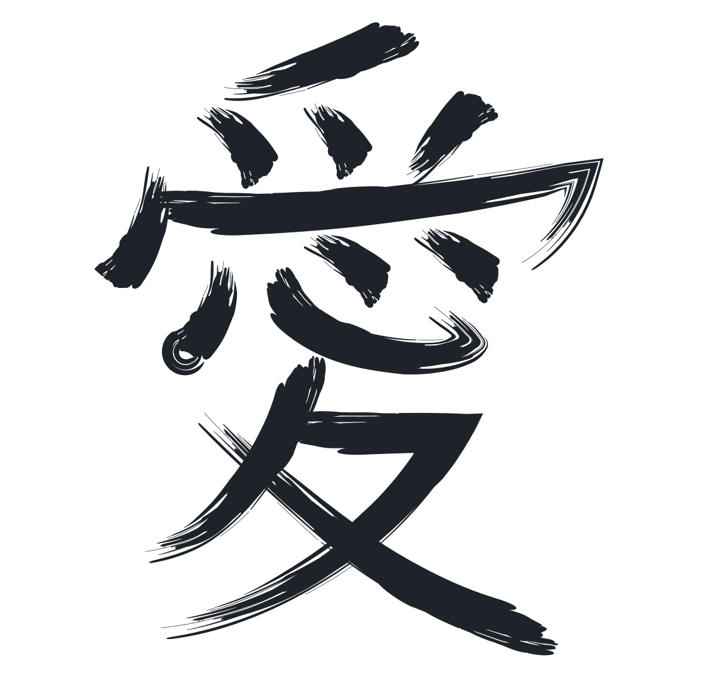

Amor
Sobre mi
Soy Antonella Borasio, una desarrolladora web, amante de la programación y el desarrollo web.
Entre
mis grandes
pasiones, se encuentra la realización de páginas web, tanto para grandes empresas como pequeños
emprendimientos,
ayudando a una digitalización totalmente personalizada.
Además, soy amante de los videojuegos y de la cultura japonesa, cuyo idioma ya estudié durante 7 años, y del
diseño, con especial interés en la realización de diseños adaptados a todo tipo de usuarios.